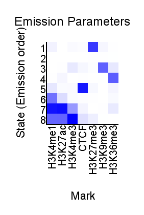
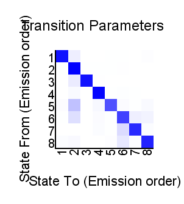
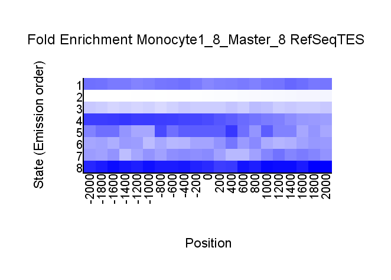
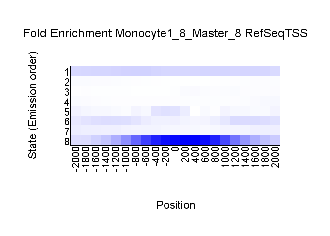
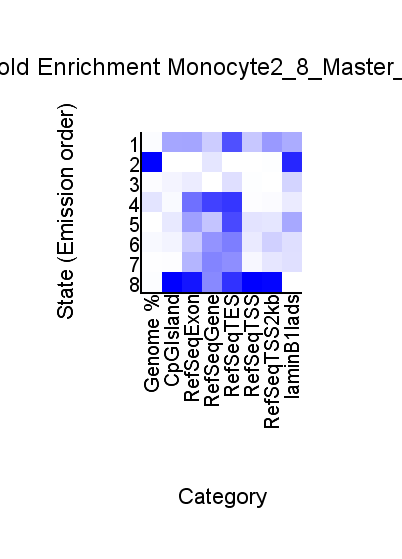
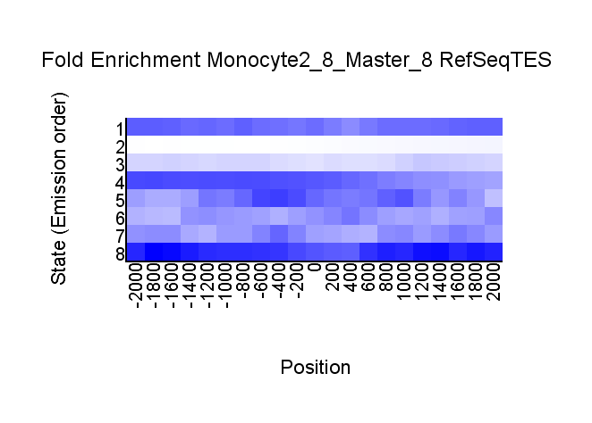

<center><h1>ChromHMM Report</h1></center>
Input Directory: ./RESULTS<br>
Output Directory: ./RESULTS/LearnModel_8<br>
Number of States: 8<br>
Assembly: hg19<br>
Full ChromHMM command: LearnModel -i Master_8 -l ./CHROMSIZES/hg19_chr16.txt -printposterior -printstatebyline ./RESULTS ./RESULTS/LearnModel_8 8 hg19
<h1>Model Parameters</h1>
<br>
<li><a href="emissions_8_Master_8.svg">Emission Parameter SVG File</a><br>
<li><a href="emissions_8_Master_8.txt">Emission Parameter Tab-Delimited Text File</a><br>
<br>
<li><a href="transitions_8_Master_8.svg">Transition Parameter SVG File</a><br>
<li><a href="transitions_8_Master_8.txt">Transition Parameter Tab-Delimited Text File</a><br><br>
<li><a href="model_8_Master_8.txt">All Model Parameters Tab-Delimited Text File</a> <br>
<h1>Genome Segmentation Files</h1>
<li><a href="Monocyte1_8_Master_8_segments.bed">Monocyte1_8_Master_8 Segmentation File (Four Column Bed File)</a><br>
<li><a href="Monocyte2_8_Master_8_segments.bed">Monocyte2_8_Master_8 Segmentation File (Four Column Bed File)</a><br>
<li><a href="STATEBYLINE"> Directory of Maximum States Assignments Line By Line</a><br>
<li><a href="POSTERIOR"> Directory of Posterior Files</a><br>
<br>
Custom Tracks for loading into the <a href="http://genome.ucsc.edu">UCSC Genome Browser</a>:<br>
<li><a href=Monocyte1_8_Master_8_dense.bed>Monocyte1_8_Master_8 Browser Custom Track Dense File</a> <br>
<li><a href=Monocyte1_8_Master_8_expanded.bed>Monocyte1_8_Master_8 Browser Custom Track Expanded File</a><br>
<li><a href=Monocyte2_8_Master_8_dense.bed>Monocyte2_8_Master_8 Browser Custom Track Dense File</a> <br>
<li><a href=Monocyte2_8_Master_8_expanded.bed>Monocyte2_8_Master_8 Browser Custom Track Expanded File</a><br>
<h1>State Enrichments</h1>
<h2>Monocyte1_8_Master_8 Enrichments</h2>
 <br>
<li><a href="Monocyte1_8_Master_8_overlap.svg">Monocyte1_8_Master_8 Overlap Enrichment SVG File</a><br>
<li><a href="Monocyte1_8_Master_8_overlap.txt">Monocyte1_8_Master_8 Overlap Enrichment Tab-Delimited Text File</a><br>
 <br>
<li><a href="Monocyte1_8_Master_8_RefSeqTES_neighborhood.svg">Monocyte1_8_Master_8_RefSeqTES_neighborhood Enrichment SVG File</a><br>
<li><a href="Monocyte1_8_Master_8_RefSeqTES_neighborhood.txt">Monocyte1_8_Master_8_RefSeqTES_neighborhood Enrichment Tab-Delimited Text File</a><br>
 <br>
<li><a href="Monocyte1_8_Master_8_RefSeqTSS_neighborhood.svg">Monocyte1_8_Master_8_RefSeqTSS_neighborhood Enrichment SVG File</a><br>
<li><a href="Monocyte1_8_Master_8_RefSeqTSS_neighborhood.txt">Monocyte1_8_Master_8_RefSeqTSS_neighborhood Enrichment Tab-Delimited Text File</a><br>
<h2>Monocyte2_8_Master_8 Enrichments</h2>
 <br>
<li><a href="Monocyte2_8_Master_8_overlap.svg">Monocyte2_8_Master_8 Overlap Enrichment SVG File</a><br>
<li><a href="Monocyte2_8_Master_8_overlap.txt">Monocyte2_8_Master_8 Overlap Enrichment Tab-Delimited Text File</a><br>
 <br>
<li><a href="Monocyte2_8_Master_8_RefSeqTES_neighborhood.svg">Monocyte2_8_Master_8_RefSeqTES_neighborhood Enrichment SVG File</a><br>
<li><a href="Monocyte2_8_Master_8_RefSeqTES_neighborhood.txt">Monocyte2_8_Master_8_RefSeqTES_neighborhood Enrichment Tab-Delimited Text File</a><br>
 <br>
<li><a href="Monocyte2_8_Master_8_RefSeqTSS_neighborhood.svg">Monocyte2_8_Master_8_RefSeqTSS_neighborhood Enrichment SVG File</a><br>
<li><a href="Monocyte2_8_Master_8_RefSeqTSS_neighborhood.txt">Monocyte2_8_Master_8_RefSeqTSS_neighborhood Enrichment Tab-Delimited Text File</a><br>
